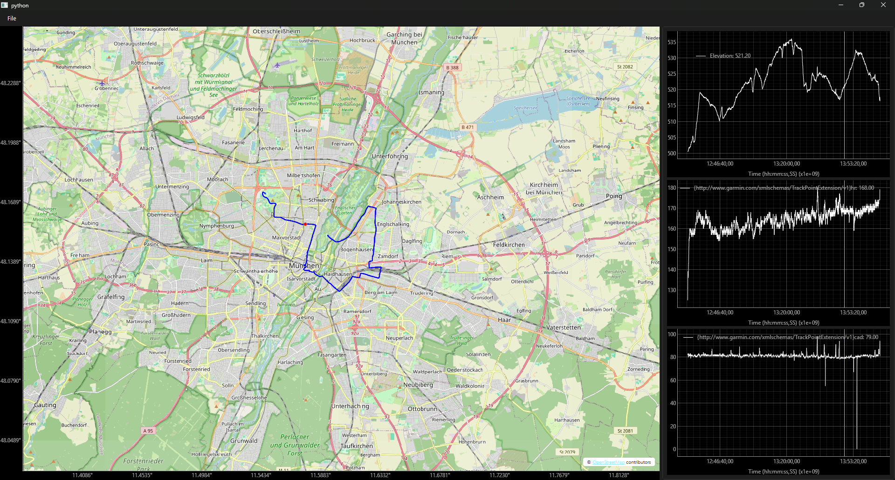

GPX Viewer
Prerequisites
Before we start, ensure you have the necessary libraries installed:
Step 1: Parsing the GPX Data (model.py)
First, we need a way to extract coordinates and sensor data (like heart rate or elevation) from a .gpx file. The Model class handles the file I/O and parses the XML structure into a dictionary that our plots can understand.
import logging
import gpxpy
logger = logging.getLogger(__name__)
class Model:
def __init__(self):
self.file_path = ""
self.gpx = None
def load_gpx_file(self, file_path: str):
if file_path != self.file_path:
try:
with open(file_path, 'r') as gpx_file:
self.gpx = gpxpy.parse(gpx_file)
self.file_path = file_path
except Exception as e:
logger.error(f"Error loading GPX file: {e}")
return False
return True
@property
def plot_data(self) -> dict:
# Check if tracks exist to prevent crashes
if not self.gpx or not self.gpx.tracks:
return {}
segment = self.gpx.tracks[0].segments[0]
data = {"time": [], "lat": [], "lon": [], "elevation": [], "extensions": {}}
# Scan for all available extension keys first
extension_keys = set()
for point in segment.points[:100]: # Sample first 100 points
for ext in point.extensions:
for child in ext:
extension_keys.add(child.tag)
for key in extension_keys:
data["extensions"][key] = []
for point in segment.points:
data["time"].append(point.time)
data["lat"].append(point.latitude)
data["lon"].append(point.longitude)
data["elevation"].append(point.elevation)
# Match data to found extension keys
point_exts = {child.tag: child.text for ext in point.extensions for child in ext}
for key in extension_keys:
val = float(point_exts.get(key, 0))
data["extensions"][key].append(val)
return data
Step 2: Creating the Time Plot (time_plot_widget.py)
To visualize elevation or heart rate over time, we extend pg.PlotWidget. Note that we convert Python datetime objects to Unix timestamps for pyqtgraph to process them as numerical data.
import pyqtgraph as pg
from datetime import datetime
from PyQt6 import QtCore
class TimeAxisItem(pg.AxisItem):
"""Formats Unix timestamps into readable H:M:S strings."""
def tickStrings(self, values, scale, spacing):
return [datetime.fromtimestamp(v).strftime("%H:%M:%S") for v in values]
class TimePlotWidget(pg.PlotWidget):
sigTimeChanged = QtCore.pyqtSignal(float)
sigIndexChanged = QtCore.pyqtSignal(int)
def __init__(self, parent=None):
time_axis = TimeAxisItem(orientation="bottom")
super().__init__(parent, plotItem=pg.PlotItem(axisItems={"bottom": time_axis}))
self.showGrid(x=True, y=True)
self.vLine = pg.InfiniteLine(angle=90, movable=False)
self.addItem(self.vLine)
self.plotItem.scene().sigMouseMoved.connect(self.mouse_moved)
self._curve = None
def mouse_moved(self, pos):
if self.plotItem.sceneBoundingRect().contains(pos) and self._curve:
mousePoint = self.plotItem.vb.mapSceneToView(pos)
x_val = mousePoint.x()
# Find closest data point
x_data = self._curve.getData()[0]
idx = (abs(x_data - x_val)).argmin()
self.sigIndexChanged.emit(idx)
self.sigTimeChanged.emit(x_data[idx])
def update_cursor(self, x):
self.vLine.setPos(x)
def plot_data(self, time: list, value: list, name: str):
unix = [t.timestamp() for t in time]
self._curve = self.plot(unix, value, pen='y', name=name)
Step 3: Setting Up the Map (view.py)
This is the core of the application. Using pyqtgraph-gis, we can display an OpenStreetMap (OSM) tile layer.
Initializing the Map
When setting up the MapWidget, you must provide a tile URL and a User-Agent header. This is a requirement for most tile providers like OSM to prevent 403 errors as per their Tile Usage Policy.
We will also create a Menu Bar from where the file can be loaded, and add the ScrollArea, where the additional data like elevation will be plotted.
import pyqtgraph_gis as pggis
from pyqtgraph_gis.utils import vectorized_wgs84_to_wm
import pyqtgraph as pg
from PyQt6.QtWidgets import QMainWindow, QFileDialog, QSplitter, QWidget, QVBoxLayout, QScrollArea
from PyQt6.QtGui import QAction
from PyQt6.QtCore import Qt
from archive.time_plot_widget import TimePlotWidget
import logging
logger = logging.getLogger(__name__)
class View(QMainWindow):
def __init__(self):
super().__init__()
self.plots = []
self.coords = ([], [])
self._new_file_path = ""
self.load_file_action = QAction("&Load File", self)
self.init_main_view()
self.create_menu_bar()
def init_main_view(self):
splitter = QSplitter(Qt.Orientation.Horizontal)
# Map Side
headers = {"User-Agent": "MyMapApp/1.0 (contact: email@example.com)"}
attr = '© <a href="https://openstreetmap.org/copyright">OpenStreetMap</a> contributors'
self.map_widget = pggis.MapWidget("https://tile.openstreetmap.org/{z}/{x}/{y}.png", headers=headers,
attribution_text=attr)
splitter.addWidget(self.map_widget)
# Plot Side
self.right_container = QWidget()
self.right_container.setMinimumWidth(280)
self.right_container.setMaximumWidth(500)
self.right_layout = QVBoxLayout(self.right_container)
self.scroll_area = QScrollArea()
self.scroll_area.setMinimumWidth(300)
self.scroll_area.setMaximumWidth(500)
self.scroll_area.setWidgetResizable(True)
self.scroll_area.setWidget(self.right_container)
splitter.addWidget(self.scroll_area)
self.setCentralWidget(splitter)
def create_menu_bar(self):
menu_bar = self.menuBar()
# Create the "File" menu
file_menu = menu_bar.addMenu("&File") # & is used to create a shortcut key
# Load File Button
self.load_file_action.triggered.connect(self.upload_file)
file_menu.addAction(self.load_file_action)
# Create the "Exit" action
exit_action = QAction("&Exit", self)
exit_action.triggered.connect(self.exit_app)
file_menu.addAction(exit_action)
Plotting the Track and Marker
The MapWidget allows you to plot WGS84 (Latitude/Longitude) coordinates directly using plot. However, for interactive markers, we need to handle coordinate systems carefully.
def clear_plots(self):
# Properly remove widgets to prevent memory buildup
for plot in self.plots:
self.right_layout.removeWidget(plot)
plot.deleteLater()
self.plots.clear()
self.coords = ([], [])
def plot_gpx_data(self, data: dict):
if not data: return
self.clear_plots()
self.coords = (data["lat"], data["lon"])
self.map_widget.clear()
self.map_widget.plot(self.coords[0], self.coords[1], pen=pg.mkPen('b', width=2))
self.marker = self.map_widget.scatter([self.coords[0][0]], [self.coords[1][0]], brush="r")
# Elevation Plot
self.add_time_plot(data["time"], data["elevation"], "Elevation")
# Extension Plots (Heart Rate, Cadence, etc.)
for name, values in data["extensions"].items():
self.add_time_plot(data["time"], values, name)
# Synchronize all plots
for source in self.plots:
source.sigTimeChanged.connect(self.sync_cursors)
source.sigIndexChanged.connect(self.update_marker)
The other plots will be added by the add_time_plot function.
def add_time_plot(self, time, values, name):
plot = TimePlotWidget()
plot.setMinimumHeight(200)
plot.plot_data(time, values, name)
self.plots.append(plot)
self.right_layout.addWidget(plot)
WGS84 to Web Mercator
Under the hood, pyqtgraph-gis uses Web Mercator (WM) coordinates for performance. While the helper functions like plot handle the conversion for you, when you manually update a marker's position via .setData(), you must convert the coordinates yourself.
def update_marker(self, idx):
if 0 <= idx < len(self.coords[0]):
x, y = vectorized_wgs84_to_wm([self.coords[0][idx]], [self.coords[1][idx]])
self.marker.setData(x=x, y=y)
Additional functions
def sync_cursors(self, x):
for plot in self.plots:
plot.update_cursor(x)
def upload_file(self):
path, _ = QFileDialog.getOpenFileName(self, "Select GPX", "", "GPX Files (*.gpx)")
if path: self._new_file_path = path
def exit_app(self):
"""
Exit the application.
"""
logger.info("Exit action triggered")
self.close()
exit()
@property
def new_file_path(self):
return self._new_file_path
Step 4: Connecting the Logic (controller.py)
The controller links the UI events (like loading a file) to the logic. It triggers the file dialog, sends the path to the model, and tells the view to render the resulting data.
from model import Model
from view import View
class Controller(object):
def __init__(self, model: Model, view: View):
self.model = model
self.view = view
self.connect_signals()
def load_gpx_file(self):
if self.model.load_gpx_file(self.view.new_file_path):
self.view.plot_gpx_data(self.model.plot_data)
def connect_signals(self):
self.view.load_file_action.triggered.connect(self.load_gpx_file)
Step 5: Running the App (main.py)
Now with a simple main function, the app is done:
import logging
import sys
from PyQt6.QtWidgets import QApplication
import os
from model import Model
from view import View
from controller import Controller
logging.basicConfig(level=logging.INFO)
logger = logging.getLogger(__name__)
def main():
# Create the application
os.environ["QT_QUICK_CONTROLS_STYLE"] = "Material"
os.environ["QT_QUICK_CONTROLS_MATERIAL_THEME"] = "Dark"
app = QApplication(sys.argv)
# Create instances of the model, view and controller
model = Model()
view = View()
controller = Controller(model, view)
# Show the main window
view.showMaximized()
sys.exit(app.exec())
if __name__ == "__main__":
main()
Result
All done!
You can load a .gpx file via the File menu in the menu bar. By hovering over a plot in the right side, a marker is shown at the position in the map. The plot legend shows you the values at that marker.

Summary of Key Concepts
- Coordinate Systems: Always remember that while you think in Latitude/Longitude, the map engine thinks in Web Mercator. Use vectorized_wgs84_to_wm for any manual updates to scatter points or markers.
-
Tile Etiquette: Always include a custom User-Agent when requesting tiles from OSM.
-
Performance: pyqtgraph is excellent for high-frequency data; by keeping the map and the sensor plots synchronized via signals, you create a seamless "scrubbing" experience.